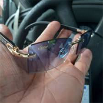

Descobri Recentemente Esses Novos Óculos Revolucionários
Nas últimas décadas, a indústria de óculos de grau contava com apenas 3 grandes empresas que podiam definir os preços que quisessem e continuavam explorando os consumidores.
Uma startup genial está virando a indústria de óculos de R$ 750 bilhões de cabeça para baixo.
A empresa chamada Óculos Tec Inteligentes descobriu uma forma de revolucionar a indústria óptica (até os maiores especialistas concordam) por uma fração do preço.
Com milhões de pessoas sofrendo com mudanças de grau e exames oftalmológicos caros, os novos Óculos Óculos Tec estão a caminho de se tornarem os óculos mais bem-sucedidos da história moderna.
O Que É?
Conheça os Óculos Óculos Tec.
A empresa por trás dos Óculos Óculos Tec recrutou engenheiros ópticos da indústria aeroespacial e médica para criar seu modelo mais recente.
Comparado aos óculos de grau tradicionais, este único par substitui toda a sua coleção — ajustando-se automaticamente para oferecer visão perfeita tanto de perto quanto de longe!
Eles se propuseram a eliminar o incômodo de múltiplos óculos, receitas constantes e consultas oftalmológicas caras. O resultado? A Óculos Tec criou os primeiros óculos verdadeiramente adaptativos que se ajustam automaticamente a qualquer nível de visão.
Mas é aqui que fica revolucionário...
Os Óculos Óculos Tec possuem tecnologia de autoajuste que é 100% sem necessidade de receita — adaptando-se automaticamente de -10 a +10 dioptrias instantaneamente.
Sem mais exames de vista. Sem atualizações de receita. Sem múltiplos pares. Um único par se adapta a 100% das suas mudanças de visão automaticamente.
A maioria das pessoas diz que parece mágica na primeira vez que os coloca. Mas como essa nova tecnologia realmente funciona?
Como Funciona?
Os Óculos Óculos Tec inventaram um Sistema de Autoajuste que usa um novo tipo de tecnologia de lentes para otimizar automaticamente sua visão, entregando uma visão cristalina instantaneamente.
É muito fácil. Basta colocá-los e as lentes se ajustam automaticamente às suas necessidades visuais.
Eles são notavelmente mais leves que óculos comuns, pesando menos de 30 gramas — a maioria das pessoas esquece que está usando. (exceto pelo fato de que agora conseguem enxergar tanto de longe quanto de perto)
Os Óculos Óculos Tec são projetados para todos que experimentam flutuações na visão — seja miopia ou hipermetropia.
Acabaram os dias de exames de vista e trocas intermináveis de lentes. Você pode usá-los no escritório, dirigindo, lendo... estes óculos se adaptam automaticamente, garantindo que você sempre enxergue com clareza onde quer que vá.
Imagine alternar perfeitamente entre foco perfeito para objetos próximos e distantes, sem precisar trocar de lentes ou de óculos.
O Que Mais os Óculos Óculos Tec Podem Fazer?
1. Filtro de Luz Azul
Vivemos em um mundo digital onde as telas estão em toda parte — no trabalho, em casa e nos nossos bolsos. Com tanto tempo olhando para dispositivos digitais, seus olhos estão constantemente expostos à luz azul nociva que causa cansaço visual, dores de cabeça e problemas no sono. Os Óculos Óculos Tec filtram a luz azul prejudicial.
2. Proteção Solar Automática
Chega de alternar entre óculos de grau e óculos de sol! Os Óculos Óculos Tec possuem tecnologia fotocromática que escurece instantaneamente na luz solar para proteção UV, depois volta a ficar transparente em ambientes internos — como ter dois pares em um.
3. Extremamente Duráveis
Feitos com materiais premium e revestimento antirriscos, os Óculos Óculos Tec são projetados para durabilidade, pesando menos de 30 gramas. Fazendo você esquecer que está realmente usando óculos.
Quanto Custa?
Óculos de grau tradicionais custam normalmente entre R$ 800 a R$ 2.000 por um par completo, e isso sem contar os exames oftalmológicos regulares e atualizações de lentes. Então você esperaria que os Óculos Óculos Tec custassem pelo menos isso...
Mas e se eu te disser que os Óculos Óculos Tec custam apenas R$ 157,00 — já uma fração do que você pagaria por óculos de grau tradicionais!
PORÉM, sabe o que é melhor do que pagar o já acessível preço de R$ 157,00?
A promoção atual de Compre 1 e Leve 2, onde você garante dois pares pelo preço de um — menos do que a maioria das pessoas gasta em uma única consulta oftalmológica!
ATUALIZAÇÃO: SOMENTE HOJE
Como Pode Ser Tão Acessível?
Você sabia que apenas um punhado de empresas gigantes controlam a maior parte da indústria de óculos no mundo? Esse monopólio significa menos opções para nós, preços mais altos, e acabamos comprando mais do que realmente precisamos.
Os Óculos Óculos Tec são diferentes. Eles não pertencem a nenhum desses monopólios. Vendem apenas online, evitam intermediários caros e repassam a economia diretamente para você.
Em vez de depender de preços inflacionados e concorrência limitada, eles deixam seus preços justos, designs inovadores e avaliações positivas falarem por si!



Conclusão: Vale a Pena?
100% Sim. Com problemas de visão afetando milhões de pessoas, os Óculos Óculos Tec são a forma do futuro para enxergar com clareza e conforto.
A hora de comprar os Óculos Óculos Tec é agora, antes que o desconto acabe. Já estão vendendo como água.
Você vai entender rapidamente por que milhares de brasileiros já fizeram seus pedidos!
Os Óculos Óculos Tec parecem um produto de R$ 1.000 com preço de R$ 157,00 (e na promoção atual, você leva 2 pelo preço de 1!).
A cereja do bolo é o preço. Se ainda estiver em promoção por menos de R$ 500 — definitivamente, garanta o seu antes que acabe.
Caso não tenha ficado claro, eu AMEI! Você não vai encontrar óculos melhores por um preço melhor.
Como Consigo os Óculos Óculos Tec Originais?
Nada de imitações, por favor — o original é essencial! Não fique preso com alguma cópia barata que não funciona!
Garanta seus Óculos Óculos Tec no site oficial aqui.
Os Óculos Óculos Tec vêm com garantia de devolução do dinheiro em 90 dias e garantia de 10 anos, então não há risco para você! Se agir agora, pode garantir a promoção Compre 1 e Leve 2 disponível somente para hoje.
Algumas Perguntas Frequentes
DICA: Na promoção Compre 1 e Leve 2, você já garante um par reserva ou pode presentear alguém especial. Aproveite esta oferta agora e faça seus familiares e amigos felizes com este presente incrível!